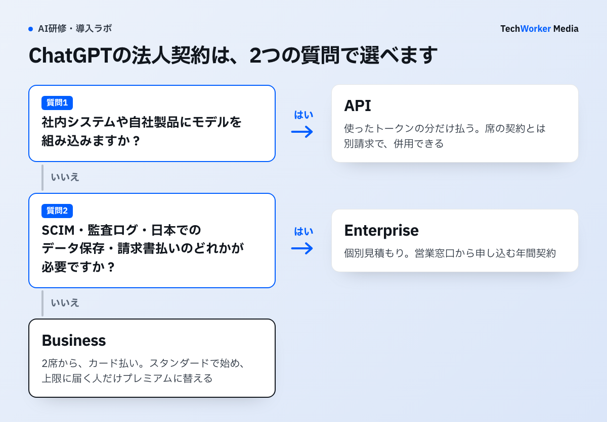
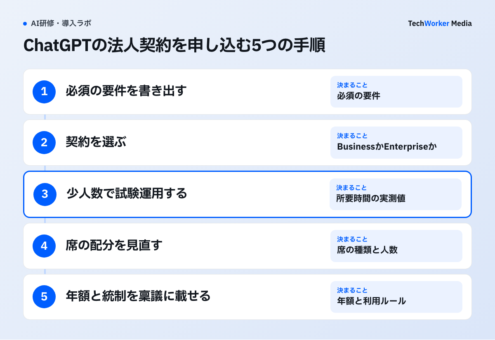

ChatGPTの法人契約は、Business・Enterprise・APIの3つです。使う人数と、求められる統制の強さで選びます。
- 2人から、カード払いですぐ始める：Businessです。スタンダードシートは1人月3,050円、プレミアムシートは月15,250円です（年払い）。
- SCIMや監査ログ、日本でのデータ保存、請求書払いが要る：Enterpriseです。料金は個別見積もりで、営業窓口から申し込みます。
- 自社のシステムや製品に組み込む：APIです。使ったトークンの分だけ払います。席の契約とは別の請求です。
どの契約でも、入力したデータは既定でモデルの学習に使われません。この記事では、OpenAIの公式ページを2026年11月11日に確認し、料金表、セキュリティの違い、選び方、申込みの手順、稟議で聞かれることをまとめます。
公式の料金は円とドルのどちらで示されていますか？
日本向けの公式料金ページは円で、ヘルプセンターは米ドルで示しています。稟議には、申込み画面に出る円の額を載せます。
原文“For most countries, pricing (USD) is $25 per user per month if billed monthly and $20 per user per month if billed annually. Note that pricing may vary depending on your country and currency type.”
日本語訳ほとんどの国で、料金（米ドル）は月払いなら1人月25ドル、年払いなら1人月20ドルです。料金は国と通貨によって変わる場合があります。
引用は、Businessのスタンダードシートの説明です。基準の価格は米ドルで決まっていて、国と通貨で変わると書かれています。
日本語の公式料金ページを日本から開くと、同じシートが月3,050円（年払い）、月3,850円（月払い）と円で表示されました。円の額は為替に合わせて改定される可能性があります。この引用から分かるのは価格の決まり方までで、消費税の扱いや請求書の書式は分かりません。申込み画面と請求書で確かめてください。
ChatGPTの法人プランの料金はいくらですか？
Businessは1人月3,050円から、Enterpriseは個別見積もり、APIはトークン単価の従量課金です。
| 契約 | 料金 | 申込みと支払い | 向いている組織 |
|---|---|---|---|
| Business（スタンダードシート） | 1人月3,050円（年払い） 月払いは3,850円 米ドルでは20ドル／25ドル | Webから申込み。2席から。クレジットカード払い | 文章作成や調べものが中心のメンバー |
| Business（プレミアムシート） | 1人月15,250円（年払い） 月払いは19,250円 米ドルでは100ドル／125ドル | スタンダードと同じ。1つのワークスペースに混在できる | ChatGPT WorkやCodexを長時間使うメンバー |
| Enterprise | 個別見積もり（公式ページに金額の掲載なし） | 営業窓口に問い合わせ。年間契約。請求書払いに対応 | 大規模な組織、統制の要件が強い組織 |
| API | モデル別のトークン単価 例：GPT-6.1 Solは100万トークン当たり入力2ドル、出力10ドル | APIプラットフォームで別に契約。ChatGPTの席とは別請求 | 社内システムや自社製品に組み込む組織 |
| （参考）Plus／Pro | Plusは月3,000円 Proは月16,800円から | 個人向け。法人の管理機能はない | 個人の検証 |
出典：OpenAI公式の料金ページ（日本語版）とHelp Center（2026年11月11日確認）。円は日本からの表示額。
Businessの年額は「席の単価×人数×12カ月」で出せます。スタンダードシートを10人が年払いで使うと、3,050円×10人×12カ月で36万6,000円です。月払いにすると3,850円×10人×12カ月で46万2,000円になり、差は年9万6,000円です。
プレミアムシートはスタンダードより利用枠が多く、5時間単位の利用上限がありません。ChatGPT Work（目標を渡すと計画から作業まで進める機能）やCodex（コードを書くエージェント）を1日中使う人に向いた席です。全員に配る席ではありません。
利用枠を超えて使いたいときは、BusinessでもEnterpriseでも、クレジットを買い足して利用量を増やせます。席の料金とは別の支払いです。公式ページには、2026年12月からBusinessの利用上限がChatGPTとCodexで共通になるという告知も出ています。即時モードでのチャットは利用枠を消費しません。
ChatGPT Teamという名前のプランはいまはありません。2025年8月29日にChatGPT Businessへ名前が変わりました。古い資料や稟議書に「Team」とあれば、Businessと読み替えます。
4社の料金比較表と稟議書の雛形は、下の枠から受け取れます。
BusinessとEnterpriseはセキュリティと管理機能で何が違いますか？
学習に使われない点とSSOは共通です。SCIM、監査ログ用のAPI、データの保存地域の指定、暗号鍵の自社管理はEnterpriseだけにあります。
| 項目 | Business | Enterprise |
|---|---|---|
| 入力データの学習利用 | 既定で使われない | 既定で使われない |
| SAML SSO・多要素認証 | あり | あり |
| ドメイン認証・管理コンソール | あり | あり |
| SOC 2 Type 2 | あり | あり |
| ISO 27001・27017・27018・27701 | 比較表では対象外 | あり |
| SCIM（利用者情報の自動同期） | なし | あり |
| ロールベースのアクセス制御 | なし | あり |
| Compliance API（監査ログの取得） | なし | あり |
| エンタープライズキー管理（EKM） | なし | あり |
| IP許可リスト | なし | あり |
| データレジデンシー（保存地域の指定） | なし | あり。日本を含む10地域 |
| 専任の導入支援・アカウント管理 | なし | あり |
出典：OpenAI公式「ビジネス向け料金」の機能比較表（2026年11月11日確認）。
情シスの審査で分かれ目になりやすいのは、次の3つです。
- 入社・退社に合わせたアカウントの自動作成と停止。SCIMはEnterpriseだけです。Businessでは、管理者が管理画面でメンバーを追加・削除します。
- 会話の記録の確かめ方。Businessでは、ワークスペース管理者が利用者の会話履歴を閲覧、エクスポート、削除できます。Enterpriseでは、Compliance APIを通じて会話の監査ログを取得できます。
- データの保存場所。保存地域を日本に指定できるのは、対象となるEnterpriseとAPIの顧客です。Businessでは指定できません。
削除した会話はBusinessでもEnterpriseでも、法令で保持が求められる場合などを除き、30日以内にOpenAIのシステムから消去されます。GDPRなどへの対応に使うデータ処理補遺（DPA）は、Business・Enterprise・APIのいずれでも締結できます。
Claudeの法人プランで同じ項目がどうなっているかは、Claudeの法人契約と料金にまとめています。
どの会社・人数ならどの契約を選びますか？
まずBusinessで始め、Enterpriseだけにある機能が必要になった時点で切り替えるのが基本です。

- 2〜200人で、カード払いができる会社：Businessです。公式ページも、従業員2〜200人のチーム向けと案内しています。全員をスタンダードシートで始め、利用上限に何度も届く人だけをプレミアムシートに替えます。
- Enterpriseだけにある機能が要件に入っている会社：Enterpriseです。SCIM、Compliance API、保存地域の指定、IP許可リスト、暗号鍵の自社管理のどれかが、社内の規程で必須になっている場合です。
- カードで払えない会社：Enterpriseなど、営業経由の契約を検討します。Businessはセルフサービスのプランで、請求書払い、発注書、銀行振込には対応していません。
- 社内システムや自社製品にモデルを組み込む会社：APIです。席の契約と併用できます。ChatGPTのワークスペースのメンバーであっても、APIの組織には自動では入りません。管理は別です。
Enterpriseの最低席数は公式の料金ページとヘルプに載っていません。人数が少ない場合に契約できるかは、営業窓口への問い合わせで確かめます。
ChatGPTに決める前に、ClaudeやGemini、Copilotと並べて比べたい場合は、生成AIの法人契約の比較を先に読んでください。Google WorkspaceやMicrosoft 365をすでに全社で使っている会社は、GeminiとCopilotの比較も判断材料になります。
ChatGPT Enterpriseの料金はどう決まりますか？
公式の金額は公開されていません。クレジットベースとトークンベースの2つの料金体系があり、条件は契約ごとに決まります。
公式の料金ページのEnterpriseの欄は「カスタム料金」で、営業チームへの問い合わせを案内しています。確認できたのは、次の点です。
- 年間プランです。請求書払いと、人数に応じたボリューム割引があります。
- クレジットベースの契約では、席に基本の利用枠が含まれます。枠を超える分は、ワークスペースで買ったクレジットから消費します。
- トークンベースの契約では、利用量を米ドルで請求します。単価は公開されていて、たとえばChatのGPT-6（GPT-6 Sol）は100万トークン当たり入力2ドル、出力10ドルです。席の料金は契約によります。
- Codexだけを使える席もあります。月額の固定費はなく、使った分だけクレジットを消費します。
- 保存地域を指定した処理には、トークンベースの料金表で標準料金の1.1倍が適用されます。
見積もりを取るときは、どちらの料金体系か、席に含まれる利用枠、超過分の単価、支出上限の設定方法を書面で確かめます。1人当たりの月額だけを聞くと、利用量の分が抜けます。
APIはChatGPTの法人プランとどう違いますか？
APIは自社のシステムからモデルを呼び出すための契約です。ChatGPTの画面を社員に配る契約ではありません。
BusinessやEnterpriseを契約しても、APIの利用料は含まれません。APIは別に契約し、別に請求されます。主なモデルの標準単価は、次のとおりです。単位は米ドルで、100万トークン当たりです。
- GPT-6 Astraは、入力10ドル、出力50ドルです。
- GPT-6.1 Solは、入力2ドル、出力10ドルです。
- GPT-6.1 Terraは、入力1ドル、出力5ドルです。
- GPT-6 Lunaは、入力0.10ドル、出力0.50ドルです。
これは標準の速度で、入力が短い場合の単価です。長い入力、Fastモード、保存地域を指定した処理は、別の単価になります。
APIのデータも、既定で学習に使われません。入力と出力は、不正利用の検知のために最大30日間保持される場合があります。要件を満たす用途では、ゼロデータ保持を申請できます。
公式の料金ページには、Businessのワークスペースで使える月額最大84,000円分のAPIクレジットという記載があります。有効化の要件と利用資格の条件が付き、内容は変更や終了がありえると注記されています。予算には入れず、付与されたら試作に使う扱いにしておくと安全です。
申込みはどんな手順で進めますか？
要件の確認、契約の選定、試験運用、席の配分の見直し、稟議の5つの手順で進めます。

- 必須の要件を書き出します。支払い方法（カードか請求書か）、SSO、SCIM、監査ログ、データの保存地域の5つについて、自社の規程で必須かどうかを確かめます。
- 契約を選びます。手順1でEnterpriseだけにある項目が必須なら、営業窓口のフォームで「ChatGPT Enterprise」を選んで問い合わせます。そうでなければ、公式ページからBusinessに申し込みます。
- 少人数で試験運用します。Businessは2席から始められます。月払いで始めると、人数と席の種類を決める前に年額を確定させずに済みます。対象の業務を絞り、導入前後の所要時間を記録します。任せる業務の選び方はAIに任せる業務の決め方を参照してください。
- 席の配分を見直します。管理画面の利用状況で、利用上限に届いた人を確かめます。その人だけをプレミアムシートに替えるか、クレジットを買い足すかを決めます。席は利用者と切り離して管理されていて、別の人に割り当て直せます。
- 年額と統制を稟議に載せます。人数と席の種類が固まったら、年払いの額で年額を出します。SSOの設定、利用ルール、退職者のアカウントを止める手順も、同じ稟議に書きます。
個人のPlusやProで使ってきた人がいる場合は、会話の移し方も先に決めておきます。Enterpriseでは、認証済みドメインのワークスペースに追加された利用者に、個人ワークスペースの統合か、エクスポートと停止かを求める場合があります。統合は取り消せません。
稟議では何を聞かれますか？
聞かれるのは、情報の扱い、費用の総額、ほかのAIとの比較、やめるときの条件の4つです。
稟議で答えを用意しておく項目
□ 入力した情報は学習に使われるか（Business・Enterprise・APIは既定で使われない）
□ 誰が会話を見られるか（管理者の権限と、OpenAI側のアクセスの範囲）
□ 認証と退職者の扱い（SSO、多要素認証、SCIMの有無）
□ データの保存場所と保持期間（保存地域の指定はEnterpriseとAPI）
□ 年額の内訳（席の単価×人数×12カ月、クレジットの上限、APIの上限）
□ 支払い方法（カードか請求書か、通貨、税の扱い）
□ ほかのAIと比べた理由（すでに契約しているMicrosoft 365やGoogle Workspaceとの関係）
□ 見直しの条件（利用率が基準に届かないときに席を減らす基準と時期）
「OpenAIの社員は会話を見られるのか」も、よく出る質問です。公式の説明では、Businessの場合、アクセスできるのは次の2者に限られます。1つは、サポートの提供、不正利用の調査、法令遵守のために承認された従業員です。もう1つは、機密保持の義務を負い、不正利用の確認だけを行う専門の外部ベンダーです。
費用の欄には、ライセンスのほかに、利用ルールの整備と研修の工数も入れます。席を配っただけでは使う人と使わない人に分かれます。研修会社を比べる場合は、生成AI研修を外部委託するRFPの比較項目が使えます。
よくある失敗にはどんなものがありますか？
多いのは、個人プランを経費で配ること、請求書払いを前提に進めること、全員にプレミアムシートを配ることの3つです。
- 個人のPlusを経費精算で配ってしまう。Plusは月3,000円で、Businessのスタンダードシート（年払いで月3,050円）とほぼ同じ額です。ただし個人向けプランでは、会話の内容が既定でモデルの学習に使われます。拒否の設定はできますが、設定は1人ずつで、会社は確かめられません。会社の管理画面もSSOもありません。
- Businessを請求書払いで買えると思って進める。Businessの支払いはクレジットカードです。法人カードがない会社は、稟議が通った後に止まります。最初に経理へ確かめます。
- 全員にプレミアムシートを配る。プレミアムはスタンダードの5倍の価格です。席は混在でき、後から替えられます。スタンダードで始め、利用状況を見てから替えます。
- SSOだけを理由にEnterpriseへ進む。SAML SSOと多要素認証はBusinessにも含まれます。Enterpriseへ進む理由は、SCIM、監査ログ、保存地域の指定などの有無で決めます。
- APIの費用がChatGPTの席に含まれると考える。APIは別契約で別請求です。開発チームが作った試作の利用料が、想定外の請求として出てくることがあります。APIの組織にも支出の上限を置きます。
- 1ドル何円かを自社で換算して稟議に書く。日本向けには円の価格が表示されます。換算した額と請求額がずれるので、申込み画面の円の額を使います。
よくある質問
Businessは2席からです。スタンダードシートとプレミアムシートを合わせて2席あれば契約できます。Enterpriseの最低席数は公式ページに載っていないため、営業窓口に確かめます。
スタンダードシートは年払いで1人月3,050円、月払いで3,850円です。プレミアムシートは年払いで1人月15,250円、月払いで19,250円です（2026年11月11日、日本からの表示額）。
ChatGPT Business、ChatGPT Enterprise、APIのデータは、既定でモデルの学習に使われません。フィードバック機能などで明示的に共有に同意した場合は、共有したデータが使われることがあります。
できません。Businessはクレジットカードで支払うセルフサービスのプランです。請求書払い、発注書、銀行振込が必要な場合は、Enterpriseなど営業経由の契約を検討します。
名前が変わりました。ChatGPT Teamは2025年8月29日にChatGPT Businessへ改称されています。
対象となるChatGPT EnterpriseとAPIの顧客は、保存地域に日本を選べます。Businessでは保存地域を指定できません。
次の一歩は何から始めればよいですか？
支払い方法と必須の要件を確かめ、Businessの2席で試験運用を始めるのが最短です。
- 経理に、法人カードで月額のサービスを払えるかを確かめます。
- 情シスに、SCIM、監査ログ、データの保存地域が規程で必須かを確かめます。
- どちらも問題がなければ、Businessの2席を月払いで契約し、対象の業務を1つ決めて試します。
契約の選定から稟議資料の組み立て、利用ルールの整備、研修まではTechWorkerが伴走します。検討段階のご相談だけでも歓迎です。
出典と確認範囲
確認日：2026年11月11日。料金、プラン名、機能は変更されるため、申込みの時点で公式情報を確認してください。円の額は日本から公式ページを開いたときの表示です。Enterpriseの金額と最低席数、消費税の扱いは、公式ページで確認できなかったため記載していません。
- ChatGPT 料金（個人向け／ビジネス・エンタープライズ向け）
- OpenAI ビジネス向け料金（Business・Enterpriseの機能比較表）
- OpenAI Help Center：ChatGPT Business overview
- OpenAI Help Center：What is ChatGPT Enterprise?
- OpenAI Help Center：ChatGPT 料金表（Enterprise のトークン制料金）
- OpenAI Help Center：ChatGPT と Codex の利用上限について
- OpenAI におけるエンタープライズプライバシー
- OpenAI ビジネスデータのプライバシー、セキュリティ、コンプライアンス
- OpenAI API Pricing（モデル別のトークン単価）